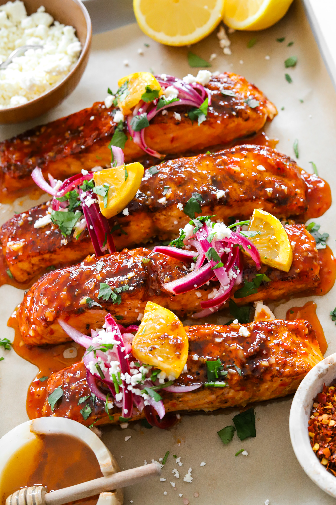

MAIN COURSE
HONEY HARISSA SALMON
PREP TIME: 10 MINUTES
COOK TIME: 20 MINUTES
TOTAL TIME: 30 MINUTES
YIELDS: 4
Looking to whip up a delicious and nutritious dinner in a flash? Say
hello to your new go-to: Honey Harissa Salmon made in the air fryer.
In just 30 minutes, you can have tender salmon fillets infused with
a sweet and spicy glaze that will leave your taste buds dancing. The
salmon is crispy yet moist and flakey and the flavor is not too
spicy or not too sweet so perfect for everyone to enjoy a bite!
Jump To Recipe
MAIN COURSE
HONEY HARISSA SALMON
Print Recipe Pin Recipe
PREP TIME: 10 MINUTES
COOK TIME: 20 MINUTES
TOTAL TIME: 30 MINUTES
YIELDS: 4
Looking to whip up a delicious and nutritious dinner in a flash? Say
hello to your new go-to: Honey Harissa Salmon made in the air fryer.
In just 30 minutes, you can have tender salmon fillets infused with
a sweet and spicy glaze that will leave your taste buds dancing. The
salmon is crispy yet moist and flakey and the flavor is not too
spicy or not too sweet so perfect for everyone to enjoy a bite!
INGREDIENTS
HONEY HARISSA GLAZE
- 1/4 cup Honey
- 1/4 cup harissa
- 1 1/2 tablespoon finely minced garlic
- 2 tablespoons unsalted butter
- 2 tablespoons lemon juice
- 1/4 cup water
- salt, to taste
- black pepper, to taste
- 1 teaspoon cornstarch mixed with 1 tablespoon water
SALMON
- 4 salmon fillets
- 2 tablespoons olive oil
- 1 1/2 teaspoon chili powder
- 1 teaspoon paprika
- 1 teaspoon coriander
- 1 teaspoon cumin
- 1 teaspoon salt, more to taste
- 1/4 teaspoon black pepper
INSTRUCTIONS
MAKE THE HONEY HARISSA GLAZE
- Heat a saucepan over medium heat and add the honey,
harissa, garlic, unsalted butter, lemon juice, and
water.
- Mix together and simmer for 5 minutes. Season with salt
and black pepper to taste.
- Combine the cornstarch with water to make the cornstarch
slurry and add it in.
- Stir until the sauce thickens and take off the heat. Set
aside.
COOK THE SALMON
- Preheat the air fryer to 400°F.
- Line the air fryer with parchment paper and lay the
salmon filets on.
- Drizzle olive oil and the spices evenly onto each
fillet.
- Air fry for 7 to 8 minutes.
- Take the salmon out of the air fryer. Brush with the
honey harissa glaze and pop back in the air fryer
for 2 to 3 more minutes.
Remove from the oven and enjoy warm!